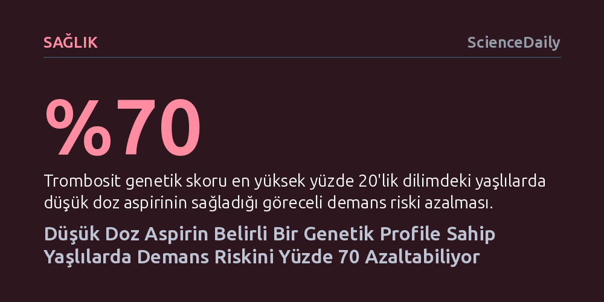

SAGLIK · ScienceDaily · 2026-10-26
Trombosit sayısıyla ilişkili genetik puanı en yüksek yüzde 20'lik dilimde yer alan yaşlılarda düşük doz aspirin kullanımı, demans riskini yüzde 70 oranında düşürüyor. Ancak bu koruyucu etkiye karşın aynı grupta majör kanama oranının iki katına çıkması, tedavinin herkese değil kişiye özel genetik profillemeyle uygulanabileceğini gösteriyor.
Genel popülasyonda demansı önlemediği bilinen ucuz bir ilacın, genetik profilleme sayesinde doğru kişilerde güçlü bir koruyucuya dönüşebileceğini göstererek tek tip tedavi anlayışını sarsıyor.

Düşük doz aspirinin genel yaşlı nüfusta demansı önlemede etkisiz olduğu, bugüne kadar geniş katılımlı klinik araştırmalarla kabul görmüş yerleşik bir görüştü. Ancak Avustralya'daki Monash Üniversitesi araştırmacıları, sorunun ilacın biyolojik kapasitesinde değil, tüm hastalara tek tip bir tedavi gibi yaklaşılmasında olabileceğini ortaya koydu. ASPREE çalışması kapsamında 13.500'den fazla yaşlı bireye ait genetik verileri yeniden inceleyen bilim insanları, genetik yatkınlıkların ilaca verilen yanıtı bütünüyle değiştirebildiğini saptadı.
Araştırma ekibinin odaklandığı temel biyolojik eksen, kanda pıhtılaşmayı sağlayan trombosit hücrelerine ilişkin genetik profildi. Katılımcıların trombosit sayısıyla ilişkili genetik skorları hesaplandığında, bu puanın en yüksek yüzde 20'lik diliminde yer alan bireylerde düşük doz aspirinin demans gelişme riskini yaklaşık yüzde 70 oranında azalttığı belirlendi.
Çalışmadaki somut veriler karşılaştırıldığında sonuç oldukça çarpıcı: Trombosit genetik puanı en yüksek dilimde yer alıp plasebo (etkisiz ilaç) kullanan grupta demans görülme oranı yüzde 3,3 iken, düzenli düşük doz aspirin alanlarda bu oran yüzde 1'e kadar geriledi. Bu bulgu, aspirin gibi son derece ucuz ve her eczanede kolayca bulunabilen bir ilacın, doğru genetik altyapıya sahip kişilerde nörodejenerasyonu kayda değer ölçüde yavaşlatabileceğini gösteriyor.
İşin biyolojik açıdan en dikkat çekici yönü ise saptanan bu koruyucu etkinin tıp dünyasının iyi bildiği klasik Alzheimer genetik risk faktörleriyle hiçbir bağlantısının olmaması. Önceki araştırmalar trombositlerin birbirine yapışması ve iltihaplanma süreçlerinin demansla ilişkili olduğunu gösterse de genetik temelli trombosit sayısının beyin sağlığını nasıl etkilediği tam olarak anlaşılamamıştı. Yeni veriler, nörodejeneratif hastalıkların mekanizmasında doğrudan trombosit biyolojisini yepyeni bir araştırma alanı haline getiriyor.
Demans riskindeki yüzde 70'lik düşüş umut verici görünse de araştırmacılar son derece kritik bir güvenlik uyarısında bulunuyor: Söz konusu koruyucu etkiye ciddi bir kanama riski eşlik ediyor. Trombosit skoru yüksek olan ve aspirin kullanan katılımcılarda, beyin ve sindirim sistemi gibi hayati organlarda majör kanama görülme oranı yüzde 4,4'e ulaştı; buna karşılık plasebo grubunda bu oran yüzde 2,1 seviyesinde kaldı.
Araştırmanın başyazarı Dr. Peter Fransquet, kamuoyunun kesinlikle hekime danışmadan demans korkusuyla aspirin kullanımına başlamaması gerektiğinin altını çiziyor. Fransquet'e göre bu bulgu, genel bir tedavi tavsiyesi sunmaktan ziyade "tek bedene uyan tek elbise" anlayışının terk edilmesi gerektiğini kanıtlıyor. Ucuz bir molekül olan aspirin, gelecekte ancak genetik testlerle taranıp kanama profili dengelenmiş doğru hastalara sunulduğunda güvenli ve kişiselleştirilmiş bir koruyucuya dönüşebilir.
Yaşlanan dünya nüfusuyla birlikte demans vakaları hızla artıyor; yalnızca Avustralya'da yarım milyona yakın olan hasta sayısının 2065 yılına kadar bir milyonu aşması bekleniyor. Bu tablo karşısında yüksek maliyetli biyolojik tedaviler yerine aspirinin hedefe yönelik kullanımı büyük bir kamu sağlığı fırsatı barındırıyor.
Buna rağmen sonuçların doğrudan tıbbi kılavuzlara girmesi için henüz erken. Bilim insanları bir sonraki aşamada bu genetik ilişkinin farklı etnik ve coğrafi topluluklarda da geçerli olup olmadığını araştıracak. Nihai adım ise yalnızca bu spesifik genetik profile sahip kişilerin dahil edileceği özel bir klinik deneme tasarlayarak aspirinin etkinliğini ve güvenliğini kesinleştirmek olacak.